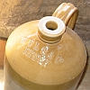

|
 |
 |
 |
|
Jèrriais |
Angliais |
|
eune vèrrée |
glassful |
|
un vèrre à baithe |
drinking glass |
|
eune boutelle |
bottle |
|
eune boutillie |
bottleful |
|
dêbouchi eune boutelle |
uncork a bottle |
|
|
|
|
santé! |
cheers! |
|
trîntchi les vèrres |
to clink glasses |
|
baithe |
to drink |
|
un béthe |
drink |
|
eune bouaisson |
drink |
|
un brévage |
drink |
|
|
|
|
l'alcool |
alcohol |
|
lé cidre |
cider |
|
lé vîn |
wine |
|
lé blianc vîn |
white wine |
|
lé rouoge vîn |
red wine |
|
la biéthe |
beer |
|
l'esprit d'vîn |
spirits |
|
l'ieau-d'vie d'cidre |
apple brandy, calvados |
|
la pomm'thie |
apple brandy |
|
lé champangne |
champagne |
|
lé rhonme |
rum |
|
lé porteur |
porter |
|
lé vîn d'Porto |
port |
|
lé madère |
madeira |
|
l'absînthe |
absinth |
|
lé p'ré |
perry |
|
lé chaûdé |
chaûdé |
|
du nouvieau cidre |
cider must |
|
lé baûtchet |
mead |
|
lé vitoué |
mead |
|
lé génèvre |
gin |
|
lé dginne |
gin |
|
dginne et tonnique |
gin and tonic |
|
lé nièr dginne |
blackcurrant gin |
|
lé dginne sus des preunelles |
sloe gin |
|
la litcheu |
liqueur |
|
lé fout-bas |
strong cider |
|
lé vîn brûlé |
mulled wine |
|
lé whisky |
whisky |
|
lé martel |
cognac |
|
lé Bordgieaux |
claret |
|
lé clairète |
claret |
|
|
|
|
lé bracheux |
brewer |
|
la brach'chie |
brewery |
|
brachi |
brew |
|
un bouchon d'liège |
cork |
| un bouochon | cork |
|
l'êprouvette |
wine taster |
|
lé tire-bouchon |
corkscrew |
|
lé preinseu |
cider press, press house |
|
lé tou d'preinseu |
cider crusher |
|
du cidre d'souos l'amet |
unfermented cider |
|
du pur jus |
unfermented cider |
| la distil'lie | distillery |
| distîler | to distil |
| la distillâtion | distillation |
| emboutilyi | to bottle |
| embout'ler | to bottle |
| l'emboutil'lie | bottling |
|
un lèrmîn |
a drop of drink |
|
un filet |
a drop of drink |
|
un filot |
a drop of drink |
|
eune reinchette |
a drop of drink |
|
un sico |
a drop of drink |
|
eune dranme |
a dram |
|
soûl |
drunk |
|
gris |
drunk |
|
ivre |
drunk |
|
chonmé |
drunk |
|
envitoué |
drunk |
|
souîn |
drunk |
|
bringuesingue |
drunk |
|
gâté d'béthe |
drunk |
|
blindé |
drunk |
|
bragi |
drunk |
|
bédé-ouinne |
drunk |
|
alleunmé |
tipsy |
|
souard |
tipsy |
|
|
|
|
s'coincer |
to get tipsy |
|
s'coêffi |
to get tipsy |
|
sé soûler |
to get drunk |
|
bouaissonner |
to get drunk |
|
prendre eune tchuite |
to get drunk |
|
êt' en bouaisson |
to be drunk |
|
senti lé bouchon |
to like a drink |
|
toper |
to tope |
|
l'alcoolisme |
alcoholism |
|
alcoolique |
alcoholic |
|
un trop-pliein |
a drunk man |
|
eune biche |
a drunk woman |
|
un ivrouongne |
a drunkard |
|
un soûlard |
a drunkard |
|
un bouaissonneux |
a drunkard |
|
un riboteux |
boozer |
|
riboter |
to booze |
|
un b'veux |
drinker |
|
un topeux |
a heavy drinker |
|
un pînteux |
a heavy drinker |
|
un chucheux |
a heavy drinker |
|
la bouaissonn'nie |
drunkenness |
|
la béthie |
drunkenness |
|
l'ivrouongn'nie |
drunkenness |
|
baithe raide |
to drink heavily |
|
gaûdgetter |
to drink heavily |
|
radaler |
to drink heavily |
|
piochi |
to drink heavily |
|
l'ver l'coute |
to drink heavily |
|
baithe à tare-larigot |
to drink heavily |
| l'aubèrge | the pub |
| la dgèrgote | the pub |
| lé cabathet | the bar, the pub |
| té pliaît-i' à baithe? | fancy a drink? |
| té pliaît-i' eune fais à baithe? | fancy a drink? |
| té pliaît-i' baithe eune fais? | fancy a drink? |
| la natte à biéthe | beer mat |
| convier | pay for a round of drinks, stand a round |
| lé convieux | person whose round it is |
| la conviéthie | paying for a round of drinks |
| ch'est mé tchi convyie | it's my round; I'm paying |
| ch'est té tchi convyie | it's your round; you're paying |
| ch'est li tchi convyie | it's his round; he's paying |
| ch'est lyi tchi convyie | it's her round; she's paying |
| baithe deux d'gouts | to have a drop |
| super | to sip, to slurp |
| heunmer | to sip |


"Vèrse dans man vèrre!"

Viyiz étout:
{kind=link}